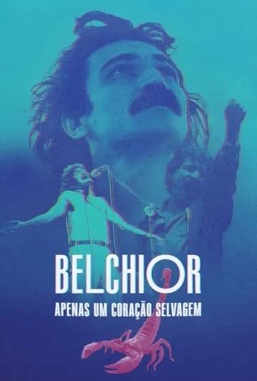

Apoie
Vídeos
Para facilitar buscas, navegue usando o sumário de categorias:
Videoclipe: Na Hora do Almoço (1974)
Sobre
Foi cantando "Na Hora do Almoço" que Belchior venceu o IV Festival Universitário de Música Brasileira, promovido pela TV Tupi do Rio de Janeiro em 1971. A versão gravada em 1974, em seu primeiro disco, ensejou a gravação do seu primeiro videoclipe, o qual foi produzido pelo Fantástico (rede Globo).
Videoclipe: Apenas um Rapaz Latino Americano (1976)
Sobre
Baseado na versão do disco Alucinação. Um retrato da sua paixão pela américa latina, produzido pela Universal Music Brasil e Rede Globo de Televisão.
Videoclipe: Divina Comédia Humana (1979)
Sobre
Clipe produzido pela Rede Globo de Televisão e exibido no Fantástico em 1979, com o som da faixa 1 do álbum Todos os Sentidos.
Videoclipe: Canção de Gesta de um Trovador Eletrônico (1984)
Sobre
Clipe de 1984 produzido pela Rede Globo de Televisão. A produção artística de Belchior também recebeu influência dos grandes nomes do rock, sobretudo de John Lennon e os Beatles. "Cidade grande é uma droga, mas o rock dá o tom".
MPB Especial (1974)
Sobre
Na dura busca de promover seu primeiro disco, Belchior participou do programa MPB Especial da TV Cultura. No vídeo, ele se apresenta mais jovem, ainda com resquícios do estilo hippie, e conta sua trajetória de vida.
Ensaio - Belchior (1992)
Sobre
Numa conversa com Fernando Faro, Belchior relembra momentos marcantes de sua carreira e canta seus grandes sucessos. O programa foi ao ar em 1992 pela TV Cultura.
Baihuno (1994)
Sobre
Gravação amadora do show Baihuno, apresentado no Teatro Paulo Eiró por Belchior e Sérgio Zurawski.
Projeto Dia & Noite, Salvador - BA (1998)
Sobre
Show no Pelourinho, no Projeto Dia & Noite, com o acompanhamento de Sérgio Zurawski (guitarra) e Roger Carrer (teclado).
Especial Acústico (2004)
Sobre
A edição do programa foi ao ar em 2004 pela emissora local cearense TV Diário.
Falcão e Amigos (2004/2005)
Sobre
Falcão e Belchior eram amigos desde a época do ginasial em Fortaleza. Na edição 49 do quadro Na Rede Com Falcão, ele decidiu postar um momento marcante dessa amizade como homenagem aos 75 anos de Belchior.
Show em Fortaleza - CE (2007)
Vox Populi (1983)
Sobre
Após o lançamento do disco Paraíso, Belchior foi convidade a dar entrevista na Vox Populi, um programa com perguntas de todo tipo de gente.
Opus in Concert (década de 1990)
Sobre
Entrevista concedida a Luciana Cassol Lopes antes de um show no Theatro São Pedro em Porto Alegre/RS.
A Vida é um Show (2003)
Sobre
Esta edição do Recordar é TV exibe uma entrevista que Belchior deu a Miele na TVE do Rio de Janeiro em 2003.
Fantástico (2009)
Sobre
Em seu autoexílio no Uruguai, Belchior foi vencido pela importunação da mídia e concedeu uma entrevista ao Fantástico, aquela que talvez seria a última de sua vida.
Belchior Eterno (2017)
Sobre
Documentário exibido pela TV Verdes Mares na madrugada de 04 dezembro de 2017.
Memória Rede Minas (2017)
Sobre
Uma coletânea de trechos de Belchior compilada pela Rede Minas.
Especial Belchior (2018)
Sobre
Documentário produzido pela TV Ceará.
Belchior, Apenas um Coração Selvagem (2022)
Um documentário que mergulha no coração selvagem do poeta, cantor e compositor cearense que com sua obra e suas ideias cortantes marcou e ainda marca a vida de tanta gente.
O filme conta com um rico material de arquivo, principalmente composto por entrevistas do próprio Belchior e por suas apresentações musicais, além de imagens que ajudam a ilustrar as lembranças e as reflexões que vêm à tona nos depoimentos — de documentos e fotos antigas a trechos de filmes e matérias jornalísticas. Dirigido por Camilo Cavalcanti e Natália Dias, o longa conta com a participação do ator Silvero Pereira, que recita trechos das letras das canções compostas pelo artista cearense, como “Sujeito de Sorte”.
Juntas, essas imagens se costuram em uma narrativa que conta a história de vida de Antônio Carlos Belchior, que nasceu em uma família numerosa de 23 irmãos, em Sobral, no Ceará. Fala de sua formação em medicina e de sua mudança para São Paulo, investindo na possibilidade de ser músico profissional, e reflete sobre essa experiência e outros temas importantes para ele. Sua relação com o sucesso e com a opinião pública — que ora o considerava um ‘sex symbol’, ora um rebelde — também é um assunto frequente.
Acesse o documentário clicando aqui.